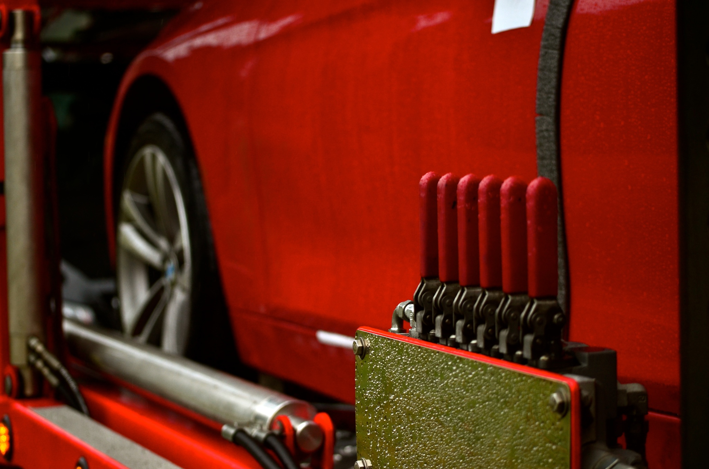

Sharing is Caring
Interlink Auto Transport has deep roots in the community.

Ronald McDonald House Charities of Chicagoland & Northwest Indiana
2014 - The Ronald McDonald Family Room provides a haven of respite and hospitality to families whose children are in treatment at the hospital. Located just outside the pediatric intensive care unit and outpatient service area, the space provides a home-like atmosphere away from the stress of the hospital, allowing families a moment to rest and rejuvenate, so that they can face the stress of the hospital visit with renewed energy.
Ronald McDonald House Charities of Chicagoland & Northwest Indiana
1301 W. 22nd Street Suite 905
Oak Brook, IL 60523
http://rmhccni.org/
Support Super Sam
2014 - Sam Santhuff is a 5 year old boy that was diagnosed with rhabdomyosarcoma. The family needs help raising money to pay for Sams medical expenses. Sam and his mother are going to be flying out to Florida for a new treatment that will help decrease the radiation in his body. This trip requires buying food, plane tickets and even living there for 30+ days.
Support Super Sam
http://www.gofundme.com/Support-Super-Sam
Caring Bridge
2014 – Caring Bridge is a nonprofit organization that offers free sites for people in need of financial assistance in times family and medical crisis. Today, CaringBridge serves more than 500,000 people a day.
Support Sophia
http://www.caringbridge.org/shared-stories/from-your-hearts
The North Oakland Family YMCA
2014 - The Y strengthens the foundations of community through our focus on youth development, healthy lifestyles and social responsibility. Initiatives are a vital part of our promise to deliver positive, meaningful change in our community. Find out what we're doing and get involved!
http://ymcadetroit.org/north-oakland/
Woodlands Church
2013 & 2014 - For 2 decades now, Woodlands Church has spread the gospel of hope throughout the world while ministering to the needs of literally millions of hopeless and hurting people. Through this ministry God continues to work and bring about heart and spirit transformation locally, nationally and globally.
http://woodlandschurch.tv/give
Hope & Friendship Foundation - Walk With Andrew
2013 -Walk With Andrew was organized to provide Andrew with financial, emotional, and physical assistance. At the age of 15, Andrew was in a severe accident which left him paralyzed. He is currently attending Next Steps Physical Therapy where he is involved in an intense rehabilitation program. His goal is to walk again!
Walk With Andrew
11 Liberty Drive
Lemont IL 60439
http://walkwithandrew.com/ and http://hopeandfriendshipfoundation.com/
WTTW
2013 -The fulfillment of WTTW’s mission to educate, engage, and inspire our community with a wide range of high quality programming is made possible in part by the partnership of private, family, community, and corporate foundations, as as government agencies.
http://interactive.wttw.com/support/foundation